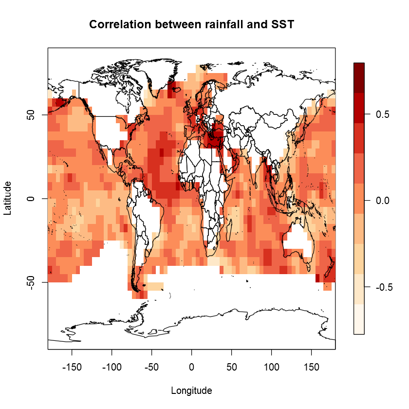

Fisseha Berhane
PhD Candidate, Department of Earth and Planetary Sciences, Johns Hopkins University
3400 N. Charles Street, Baltimore, MD 21218, USA • Office: 325 Olin Hall
☎ (443)970-2353
Email: fisseha@jhu.edu
CV 

PhD Candidate, Department of Earth and Planetary Sciences, Johns Hopkins University
3400 N. Charles Street, Baltimore, MD 21218, USA • Office: 325 Olin Hall
☎ (443)970-2353
Email: fisseha@jhu.edu
CV 

The following are some of the kind of analysis I do using R
In this first example, we display how to use R to analyse climate data. Most climate data are in NetCDF format
which is an array that contains different variables and dimensions.

Now, let's see how to open netcdf data in R and
generate monthly climatology of global read more
It is now possible to collect a large amount of data about personal movement using activity monitoring devices such as a Fitbit (http://www.fitbit.com), Nike Fuelband (http://www.nike.com/us/en_us/c/nikeplusfuelband), or Jawbone Up (https://jawbone.com/up). These type of devices are part of the “quantified self” movement – a group of enthusiasts who take measurements about themselves regularly to improve their health, to find patterns in their behavior, or because they are tech read more
This report seeks to investigate storms and other weather events that cause the highest number of fatalities and injuries. Moreover, it shows which events have the greatest economic consequences. Understanding the impacts of different weather events on public health and the economy of the nation is essential to take necessary preparations read more
This application uses rainfall and temperature data from the Climate Research Unit (http://www.cru.uea.ac.uk/) and calculates monthly climatology and trend of rainfall or temperature over a rectangular region read more
There are different ways that we can download and read data into R. Some examples are shown below. read more